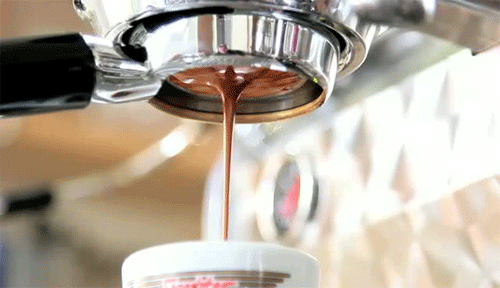

The Science of Good Espresso
open

Coffee is my passion. The key to any good latte is getting that good espresso extraction. In order to get the extraction right, there is a certain science to it.
Checklist for making a good espresso
- The Proper Tools
- An Espresso Machine - a manual espresso machine is preferred
- A Portafilter - a bottomless portafilter (as seen in the gif above) is best for perfecting your extraction, since it will show you any errors you've made with your prepping process, based on how the espresso flows. For example, if your espresso start spurting out sidways, that could mean you pressed your coffee grounds unevenly.
- A Good Coffee Grinder - the key to a good espresso is how you grind your beans. Grinding your own beans should be the standard.
- A Coffee Tamper - This is a small tool that is used for packing your coffee grounds into a compact puck.
- A Food Scale - Most of the science involved is related to your weight measurements throughout the whole process. You will want a scale that measures in grams and reads at least a tenth of a gram.
- The Science
- Measuring your beans - There is a ratio of espresso to beans that is essential to making a good shot of espresso. Typically people say that a 2:1 ratio is best (e.g. 36g espresso to 18g beans). This means you want to measure out 18g of beans, grind, prep, and extract 36g of espresso.
- Grinding your beans - When making espresso, grinding your beans in a certain way is very important. Usually you want to grind your beans very finely, so that there is higher pressure when your espresso is extracting. The more pressure, the more coffee concentration. This will take trial and error to find that perfect grind consistancy. This process is called dialing in your machine.
- How old are your beans - The age of your beans will affect the taste of the espresso. The older the beans, the finer you will need to grind to get your ideal flavor profile.
- Puck prep - Prepping your puck is a whole process, but so worth it. You start with grinding your beans. Then you want to distibute the grounds evenly in your portafilter. This can be done using a Distributor tool, or you can simply use your finger. Next you will want to tamp your grounds into a compact puck using around 30 pounds of pressure.
- The extraction - You will want to place your scale underneath your shot glass when extracting your espresso. As mentioned prior, you want to have around a 2:1 espresso to beans ratio. If you started with 18g of beans, you will want to cut off your extraction when you have 36g of espresso in your glass.